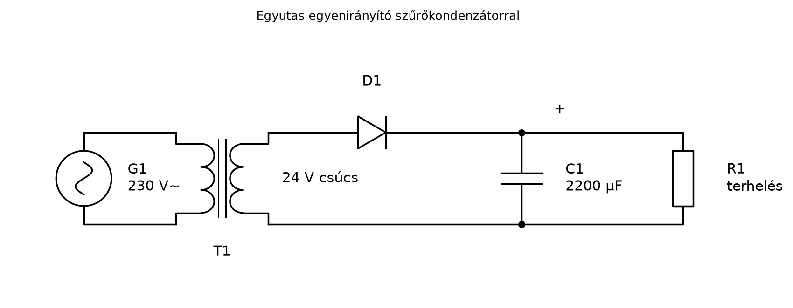
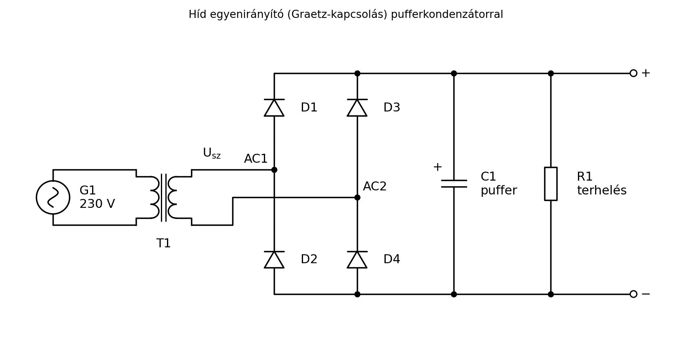
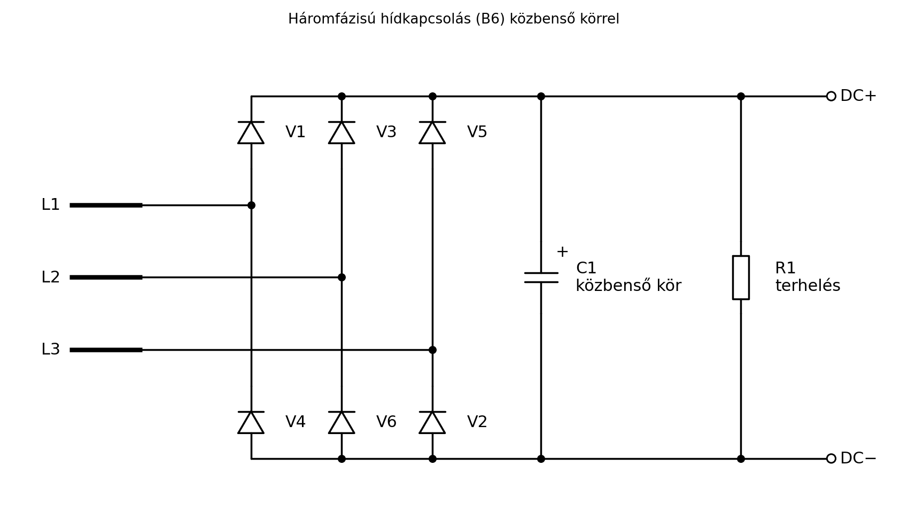
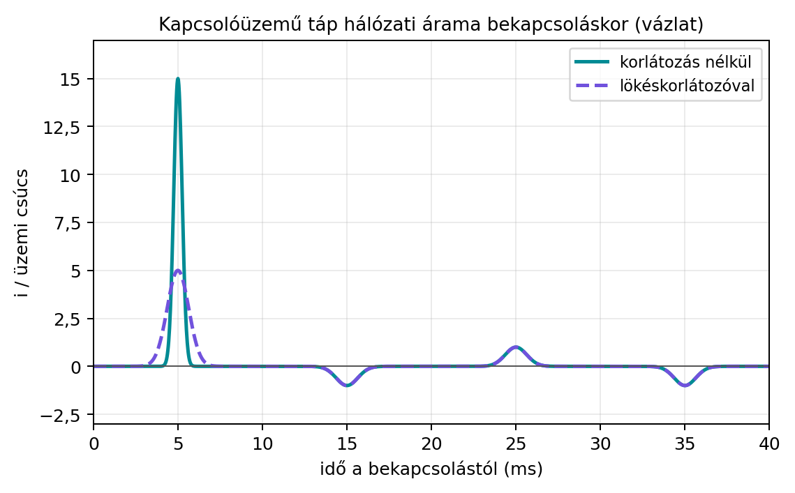

![(a) Lineáris táp: T1 transzformátor, híd-egyenirányító, C1 szűrő, 7812 stabilizátor és terhelés egymás után; alattuk jelalakok: 230 V-os szinusz 325 V csúccsal, 24 V-os szinusz kb. 34 V csúccsal, kétutasan egyenirányított félhullámok, fűrészes hullámosság ΔU jelöléssel, sima 12 V; a T1-en át szaggatott vonal jelzi a galvanikus leválasztást. (b) Kapcsolóüzemű táp: EMI-szűrő, híd és pufferkondenzátor (kb. 325 V DC, PFC-vel 380–400 V), PWM-mel kapcsolt tranzisztor, nagyfrekvenciás transzformátor, kimeneti egyenirányító és LC-szűrő, 24 V kimenet; a kimenetről hibaerősítő, optocsatoló és PWM-vezérlő zárja a szabályozási hurkot; a leválasztási határ a transzformátoron és az optocsatolón halad át, a primer oldal szürke.](figures/img/ve138-4.png)
Egy LED-világítás driverét, egy telefon töltőjét vagy egy vezérlőszekrény 24 V-os tápegységét kinyitva ugyanazt a logikai láncot találjuk: a hálózati váltakozó feszültséget egyenirányítani kell, a lüktető egyenfeszültséget ki kell simítani, majd stabilizálni. Ha egy tápegység meghibásodik, a hiba sokszor az egyenirányító diódában, a pufferkondenzátorban vagy a kapcsolóüzemű fokozatban van. Az alfejezet célja, hogy a blokkvázlattól a kapcsolásokon át a méretezésig értse a tanuló, mi történik a készülékben, és hogyan lehet biztonságosan mérni, javítani.
A klasszikus hálózati tápegység (lineáris táp) és a kapcsolóüzemű tápegység felépítését az alábbi ábra veti össze. Minden blokk alatt egy kis jelalak-ablak mutatja, milyen feszültség mérhető az adott blokk bemenetén (közös, 40 ms-os időtengely), a szaggatott függőleges vonal pedig a galvanikus leválasztás határa; a szürke háttér a hálózati potenciálon lévő részeket jelöli.
Kövesd végig az (a) részen, hogyan lesz a 230 V-os szinuszból előbb kisebb szinusz, majd lüktető, végül sima egyenfeszültség! A (b) részen figyeld meg, hogy a leválasztási határt két alkatrész hidalja át: a transzformátor (energia) és az optocsatoló (a szabályozó jel, fénnyel – lásd a fototranzisztort és az optocsatolót a Hő-, fény- és feszültségfüggő elemek és érzékelők alfejezetben). Minden, ami a határtól balra van, hálózati potenciálon van, akkor is, ha „csak” egy kis vezérlő-IC – ezért vonatkozik rá az SMPS-szakasz biztonsági korlátja.
A transzformátor a feszültség szintjét állítja be és galvanikusan leválasztja a hálózatot. Az egyenirányító a váltakozó feszültségből lüktető egyenfeszültséget állít elő, a szűrőkondenzátor ezt kisimítja, a stabilizátor pedig a terhelés és a hálózat változásai ellenére közel állandó kimeneti feszültséget tart. A kapcsolóüzemű tápegység ugyanezt a célt szolgálja, de a transzformátort nagyfrekvenciás kapcsolással és kisebb vasmaggal valósítja meg, ezért kisebb és jobb hatásfokú.
Az egyutas kapcsolás egyetlen diódát tartalmaz a transzformátor szekunder tekercse és a terhelés között. A dióda csak a pozitív félperiódusban vezet, a negatívban lezár, így a kimeneten a szinuszjelnek csak a pozitív fele jelenik meg.
Az áramkört a következő kapcsolási rajz mutatja (T1 transzformátor, D1 dióda, C1 szűrőkondenzátor, R1 terhelés):

Definíció. Az egyutas egyenirányító olyan egyenirányító, amely a váltakozó feszültségnek csak az egyik félperiódusát engedi át, ezért a kimeneti áram mindig azonos irányú, de erősen lüktet. A kimeneti feszültség középértéke ohmos terhelésen, szűrőkondenzátor nélkül (szűrőkondenzátorral és kis terheléssel a kimenet közel ), ahol a szekunder feszültség csúcsértéke.
Előnye az egyszerűség, hátránya a rossz kihasználás és a nagy hullámosság. A transzformátor vasmagja egyenáramú előmágnesezést kaphat, ezért kisfeszültségű, kis áramú helyeken használjuk.
A teljeshullámú megoldás a szinusz mindkét félperiódusát kihasználja.
Középmegcsapolásos kétutas egyenirányító
A transzformátor szekunder tekercsének középmegcsapolása a közös ponthoz
(0 V) csatlakozik, a két szélső kivezetésre egy-egy dióda kapcsolódik. A
pozitív félperiódusban az egyik dióda vezet, a negatívban a másik, így a
terhelésen mindig azonos irányú áram folyik.
A kapcsolást az alábbi rajz mutatja; a megcsapolás a 0 V-os pont, a két dióda katódja közösen a + kimenet:
![Középmegcsapolásos kétutas egyenirányító (2 × 12 V-os szekunder) - A T1 szekunder tekercsének középmegcsapolása a 0 V-os közös pont. Ha a szekunder felső vége pozitív, D1 vezet (felső féltekercs), a másik félperiódusban D2 (alsó féltekercs); a két katód közös pontja a + kimenet, így az R1 terhelésen az áram iránya mindig azonos. A lezárt dióda a TELJES szekunder feszültséget kapja (a saját féltekercsét és a vezető dióda féltekercsét), ezért U_RRM ≥ 2·U_csúcs (egy féltekercs csúcsértékére). A 0 V-os vezeték pont nélkül keresztezi a D2 katódvezetékét: ez nem csatlakozás.](assets/ve138-diagram-2.png)
Figyeld meg, hogy minden félperiódusban csak az egyik féltekercs dolgozik: a középmegcsapolású transzformátor szekunderének ezért kétszer akkora feszültségre kell tekercselni, mint a hídnál, viszont csak egy dióda feszültségesése van az áramúton.
Híd egyenirányító (Graetz-kapcsolás)
A négy diódából álló híd a leggyakoribb egyenirányító. A váltakozó
feszültség a híd két szemközti pontjára csatlakozik, a kimenet a másik
két pont. A pozitív félperiódusban két dióda vezet, a negatívban a másik
kettő, így a terhelésen mindkét félperiódusban azonos irányú feszültség
jelenik meg. A híd kimeneti csúcsfeszültsége közelítőleg
,
a hullámossági alapharmonikus pedig kétszerese a hálózati frekvenciának
(100 Hz).
A következő rajz a hidat a T1 transzformátorral, a C1 pufferkondenzátorral és az R1 terheléssel mutatja. A felső két dióda (D1, D3) katódja a + kimeneten, az alsó két dióda (D2, D4) anódja a − kimeneten találkozik; egy félperiódusban mindig egy átlós diódapár vezet (D1–D4, illetve D3–D2).

Definíció. A kétutas (teljeshullámú) egyenirányító az egyenirányítás során a váltakozó feszültség mindkét félperiódusát felhasználja. A kimeneti feszültség középértéke ohmos terhelésen, szűrőkondenzátor nélkül . Szűrőkondenzátorral és kis terheléssel a kimenet közel (lásd a Simítás szakaszt). A híd kapcsolás a négy dióda miatt nagyobb feszültségeséssel rendelkezik, de a transzformátor teljesítményét jobban kihasználja, mint a középmegcsapolásos változat.
A gyakorlatban a négy diódát ritkán építjük be külön: a hidat egyetlen tokban árulják. Az alábbi ábrán (a) egy kis áramú, négy kivezetéses kerek tok, (b) egy lapos, egysoros (SIL) tok és (c) egy négyszögletes fémtok látható középső szerelőfurattal; a nagyobb áramú tokokat hűtőfelületre kell csavarozni. A kapcsok jelölése mindegyiken azonos: két ~ (váltakozó áramú bemenet), + és − (egyenáramú kimenet). A (d) rész a fenti kapcsolási rajz megvalósítását mutatja: a két ~ kapocs a transzformátor szekunder tekercsére, a + a pufferkondenzátor + kivezetésére, a − a − kivezetésére kerül.

A két ~ kapocs sorrendje mindegy, a + és − felcserélése viszont a pufferkondenzátort tönkreteszi. A lábsorrend típusonként eltér, ezért mindig a tokra nyomtatott jelölést kövesd (a fémtokon a + kapocs jellemzően a levágott saroknál van – adatlap szerint). A HTML-kiadásban az egyes tokokra és a bekötés részeire mutatva megjelenik a magyarázat.
Háromfázisú rendszerben hat diódát használó háromfázisú hidat alkalmaznak (B6 kapcsolás). A fázisfeszültségek közül mindig az a diódapár vezet, amely a legnagyobb vonali feszültségnek felel meg, így a kimeneti feszültség hullámossága sokkal kisebb, alapfrekvenciája 300 Hz (6·50 Hz). A kimeneti középfeszültség közelítőleg szinuszos táplálásnál. Ezt a kapcsolást ipari hajtások, frekvenciaváltók és nagyobb egyenáramú tápegységek bemenetén találjuk.
A háromfázisú híd előnye a kis hullámosság és a jó teljesítménytényező, hátránya a hat dióda és a bonyolultabb felépítés.
A B6 kapcsolás rajza (a felső sor V1, V3, V5 katódja a DC+ sínen, az alsó sor V4, V6, V2 anódja a DC− sínen; minden fázis két dióda közös pontjára fut):

Kövesd végig egy pillanatban: ha éppen L1 a legpozitívabb és L2 a legnegatívabb fázis, az áram L1 → V1 → DC+ → terhelés → DC− → V6 → L2 úton folyik. Hatodperiódusonként (3,33 ms) más diódapár veszi át a vezetést – innen a 300 Hz-es hullámosság.
Diódacserénél a legfontosabb adat a nyitóirányú áram mellett a legnagyobb ismétlődő zárófeszültség (): ekkora feszültséget bír ki a dióda záróirányban. A szükséges érték kapcsolásonként más, mert a lezárt diódára jutó feszültség attól függ, mi van a két oldalán.
| Kapcsolás | jelentése | Lezárt dióda feszültsége | Szükséges |
|---|---|---|---|
| egyutas, szűrő nélkül | a szekunder csúcsértéke | a negatív félhullám csúcsa | |
| egyutas, C-vel | a szekunder csúcsértéke | a feltöltött C (+) és a negatív csúcs összege | |
| középmegcsapolásos | egy féltekercs csúcsértéke | a teljes szekunder (két féltekercs) | |
| híd (Graetz) | a teljes szekunder csúcsértéke | egy csúcsérték (a vezető pár a másik oldalra kapcsolja) | |
| háromfázisú híd (B6) | a vonali feszültség csúcsértéke | (400 V-on) |
A táblázat a minimumot adja. A hálózaton fellépő túlfeszültségek miatt a gyakorlatban 1,5–2-szeres tartalékkal választunk: 230 V-ról közvetlenül táplált hídhoz 600–1000 V-os, 400 V-os háromfázisú hídhoz 1200–1600 V-os diódák a szokásosak (ellenőrizendő: gyártói ajánlás).
Az egyenirányító kimenete önmagában lüktet: az egyutasnál 50 Hz-es, a kétutasnál 100 Hz-es búgófeszültség jelenik meg. A terhelés számára általában simább egyenfeszültségre van szükség, ezért a kimenettel párhuzamosan szűrőkondenzátort kapcsolunk. A kondenzátor a diódák vezetési időszakában feltöltődik a csúcsfeszültségre, majd a diódák zárása után a terhelésen keresztül kisül.
Definíció. A hullámosság (búgófeszültség) a kimeneti feszültség váltakozó összetevője, amelyet csúcs-csúcs értékkel () jellemzünk. Közelítő képlete terhelt kapcsolásban:
ahol a terhelőáram, a szűrőkondenzátor kapacitása, pedig a kondenzátor töltési frekvenciája (egyutasnál 50 Hz, hidas kétutasnál 100 Hz, háromfázisú hídnál 300 Hz).
A képletből látható: nagyobb terhelőáram vagy kisebb kapacitás növeli a hullámosságot. A szűrés akkor megfelelő, ha a hullámosság a terhelés által megengedett határon belül marad. A kimeneti középfeszültség jó közelítéssel:
Megjegyzés. A pontos hullámosság számításához figyelembe kell venni a diódák nyitóirányú feszültségesését (szilíciumdiódánál kb. 0,7 V, hídnál két dióda, tehát kb. 1,4 V) és a transzformátor belső ellenállását. A gyakorlatban a kondenzátor kapacitását úgy választjuk, hogy a hullámosság a kimeneti feszültség néhány százaléka legyen.
A szűrt egyenfeszültség még függ a hálózat ingadozásától és a terheléstől. A stabilizátor feladata, hogy a kimeneti feszültséget közel állandó értéken tartsa.
Definíció. A lineáris stabilizátor olyan feszültségstabilizáló áramkör, amely a bemeneti feszültség és a kimeneti feszültség különbségét egy soros szabályozóelemen (általában tranzisztoron) ejti le, és a kimeneti feszültséget visszacsatolással állandó értéken tartja. A bemeneti és kimeneti feszültség különbsége hővé alakul.
A legegyszerűbb lineáris stabilizátor egy Zener-dióda és egy soros ellenállás, de a gyakorlatban integrált áramköröket használunk: pl. a 78xx sorozat (pl. 7805, 7812) fix pozitív kimeneti feszültséget ad, a 79xx sorozat negatívat. Az IC tartalmazza a referenciafeszültséget, a hibajel-erősítőt, a soros tranzisztort és a védelmeket (túláram, túlmelegedés).
Szabály. Lineáris stabilizátor használatakor a bemeneti feszültségnek legalább a kimeneti feszültségnél nagyobbnak kell lennie a katalógusban megadott minimális feszültségkülönbséggel (dropout feszültség). A disszipált teljesítmény:
Ez melegedést okoz, ezért a stabilizátort megfelelő hűtőbordával kell ellátni. A hatásfok:
ha a vezérlő áramfelvétele elhanyagolható. A lineáris stabilizátor hatásfoka annál rosszabb, minél nagyobb a bemeneti és kimeneti feszültség különbsége.
A lineáris stabilizátor hátránya a nagy veszteség. A kapcsolóüzemű tápegység (Switch Mode Power Supply, SMPS) a feszültség átalakítását nagyfrekvenciás kapcsolással, induktivitás vagy transzformátor energiájának periodikus felhalmozásával és leadásával végzi.
Definíció. A kapcsolóüzemű tápegység olyan egyenirányító–átalakító rendszer, amelyben egy kapcsolóelem (tranzisztor) nagy frekvencián (tipikusan 20 kHz–1 MHz) ki-be kapcsol, és a kimeneti feszültséget a kapcsolás kitöltési tényezőjének (PWM) szabályozásával állítja be. A nagyfrekvenciás üzem lehetővé teszi kis méretű induktivitás és transzformátor használatát, így a táp kisebb, könnyebb és jobb hatásfokú (jellemzően 80–95%).
A hálózati kapcsolóüzemű táp felépítését a blokkvázlat (b) része mutatja: EMI-szűrő → egyenirányító + pufferkondenzátor (kb. 325 V DC) → nagyfrekvenciás kapcsolófokozat → transzformátor → kimeneti egyenirányító + szűrő, a szabályozó visszacsatolás pedig optocsatolón át tér vissza a primer oldalra.
A szabályozás a kimeneti feszültséget méri, és a kapcsoló tranzisztor bekapcsolási idejét változtatja (PWM). A fő kapcsoló topológiák:
Összefüggés. A kapcsolóüzemű táp hatásfoka:
ahol a kimeneti egyenáramú teljesítmény, a hálózatból felvett hatásos teljesítmény. A veszteségek fő forrásai a kapcsolóelem kapcsolási vesztesége, a transzformátor és a diódák vesztesége.
Az SMPS előnye a kiváló hatásfok és a kis tömeg, hátránya a bonyolultság, az elektromágneses zavar (EMI) és a hálózati visszahatás, amit az aktív PFC oldhat meg.
Biztonsági korlát. A hálózati tápegység (SMPS) bontása és javítása hálózati feszültségű munka, ezért csak jogosult, arra képesített személy végezheti; a tanuló tanműhelyi (törpefeszültségű) környezetben vagy oktató felügyeletével gyakorolhat. Bontás előtt alkalmazd az öt biztonsági szabályt: leválasztás a hálózatról, visszakapcsolás elleni biztosítás, a feszültségmentesség ellenőrzése, a szomszédos feszültség alatti részek lefedése (a földelés–rövidre zárás a készüléken belül nem értelmezhető, a helyette szükséges lépés a kisütés). Figyelem. A primer oldali pufferkondenzátor (kb. 325 V DC, aktív PFC-vel 380–400 V DC) a hálózat leválasztása után is veszélyes töltést tarthat: várd ki a gyártói kisütési időt, majd mérd meg a kondenzátor feszültségét (megfelelő CAT-kategóriájú műszer, megfelelő méréshatár); szükség esetén süsd ki megfelelő értékű és teljesítményű, szigetelt kisütő ellenálláson át (néhány kΩ), soha ne csavarhúzóval zárd rövidre. A primer oldal a hálózattal galvanikus kapcsolatban van: földelt oszcilloszkóppal csak leválasztó transzformátoron át vagy differenciálszondával mérj, különben a szonda földcsipesze zárlatot okozhat. (ellenőrizendő: gyártói szervizutasítás)
A hagyományos egyenirányító + pufferkondenzátor bemeneti fokozat csak a hálózati feszültség csúcsai közelében vesz fel áramot, ezért a hálózati áram nem szinuszos, hanem keskeny impulzusokból áll. Ez harmonikus áramokat okoz a hálózatban, rontja a teljesítménytényezőt, és a nulla- és fázisvezetőkben túlterhelést, a transzformátorokban melegedést okozhat.
Definíció. A teljesítménytényező (Power Factor, PF) a hatásos teljesítmény és a látszólagos teljesítmény hányadosa:
Szinuszos feszültség és szinuszos áram esetén , ahol a fázisszög. Ha az áram nem szinuszos, akkor a PF kisebb lehet 1-nél a harmonikus torzítás miatt is:
ahol az áram harmonikus torzítása. A hálózati egyenirányítós tápegységeknél , de a THD nagy, így a PF jellemzően 0,5–0,7.
Szabvány. Az elektronikus berendezések hálózati visszahatását az EMC szabványok korlátozzák. A hálózati áram harmonikus összetevőire vonatkozó határértékeket az MSZ EN 61000-3-2 szabvány írja elő ( bemeneti áramú berendezésekre) (ellenőrizendő: aktuális kiadás és határértékek). A nagyobb teljesítményű SMPS-ek ezért aktív teljesítménytényező-korrekciót (PFC) kapnak.
Definíció. Az aktív PFC egy olyan bemeneti fokozat, amely a hálózati áram felvételét úgy szabályozza, hogy az arányos legyen a hálózati feszültség pillanatértékével, így az áram szinuszos és fázisban van a feszültséggel. Ezáltal a teljesítménytényező közel 1 lesz, a harmonikus tartalom pedig a szabványos határ alá csökken.
Az aktív PFC gyakorlatban egy boost konvertert használ: a hálózati egyenirányító után egy induktivitás és egy kapcsoló tranzisztor áll, a szabályzó pedig a bemeneti áramot úgy alakítja, hogy az kövesse a hálózati feszültség alakját. A PFC a kimeneti pufferkondenzátor feszültségét a bemeneti csúcsfeszültség fölé emeli (jellemzően 380–400 V DC), így a következő DC-DC fokozat stabil tápfeszültséget kap.
Hálózati visszahatás. PFC nélküli SMPS-ek nagy csúcsáramú impulzusokat vesznek fel, ami feszültségtorzulást okozhat a hálózat belső impedanciáján. Ez zavarhatja a szomszédos berendezéseket, és a villamos hálózat üzemeltetőjének is problémát jelent. Az aktív PFC ezt a visszahatást minimalizálja.
Az aktív PFC az üzem közbeni áramot teszi szinuszossá, de a bekapcsolás pillanatát nem javítja meg. A híd utáni pufferkondenzátor feszültségmentes állapotból indul, ezért az első pillanatban szinte rövidzárként viselkedik, és egyetlen, nagyon rövid, nagy áramlökéssel töltődik fel. A csúcs nagyságát a hálózat és a vezeték impedanciája, valamint a beépített lökéskorlátozó szabja meg: NTC-termisztor (hidegen nagy ellenállású, felmelegedve kicsi; lásd Hő-, fény- és feszültségfüggő elemek és érzékelők) vagy aktív korlátozó (előtét-ellenállás, amelyet a feltöltés után kapcsolóelem hidal át). A csúcs a bekapcsolás pillanatától is függ: a hálózati feszültség csúcsában kapcsolva a legnagyobb, nullaátmenet közelében jóval kisebb. Meleg NTC-vel (rövid kikapcsolás utáni újraindításkor) a korlátozás gyengébb.

Egy meghajtó lökése ritkán okoz gondot. Ha viszont egy kapcsoló sok LED-meghajtót vagy tápot kapcsol egyszerre, a csúcsok összeadódnak, és elérhetik a kismegszakító mágneses kioldójának tartományát (B jellegnél –), noha az üzemi áram messze a névleges alatt van (lásd Kismegszakítók és kioldási jelleggörbék). Megoldás lehet a körök megosztása, bekapcsolásiáram-korlátozó modul, mágneskapcsolós csoportos (késleltetve lépcsőzött) bekapcsolás, illetve C jellegű kismegszakító – ez utóbbi csak akkor, ha a kioldási feltétel a nagyobb -val is teljesül. Azt, hogy egy kismegszakítóra hány meghajtó köthető, nem fejben becsüljük: a gyártói adatlap „legnagyobb darabszám” táblázata mérvadó, kidolgozott példával együtt a Kismegszakítók és kioldási jelleggörbék alfejezetben (ellenőrizendő: a meghajtó és a kismegszakító adatlapja). Az üzemi áram alapján számolt darabszám (mint a gyakorló generátor D szintjén) ezért csak felső korlát.
A képletekből nem látszik, mikor vezetnek a diódák és milyen áramot vesznek fel a hálózatból. Az alábbi ábra ideális diódákkal, időlépéses számítással mutatja a négy kapcsolás kimenetét: (a) egyutas és (b) hidas egyenirányító 2200 µF-os kondenzátorral, (c) szűretlen híd és (d) szűretlen háromfázisú híd (B6), alatta (e) a (b) kapcsolás szekunder (hálózati oldali) árama. A tengely alatti fekete sáv jelzi, mikor vezetnek a diódák. Ugyanezek a jelalakok oszcilloszkópképként is felismerendők: Oszcilloszkóp és jelalakok.
![Négy panel 40 ms-on: (a) egyutas, 2200 µF: fűrészes kimenet 24 V csúccsal, 50 Hz-enként rövid vezetési szakasz, U_DC kb. 20,6 V, ΔU kb. 6,8 V; (b) híd, 2200 µF: 100 Hz-es kisebb hullámosság, U_DC kb. 22,4 V, ΔU kb. 3,4 V; (c) szűretlen híd: egymást követő pozitív félhullámok, U_DC kb. 15,3 V; (d) szűretlen B6 400 V-ról: hat púp periódusonként 566 V csúcs körül, U_DC kb. 540 V, 300 Hz. Alul (e): a híd szekunder árama kb. 9 A-es, rövid, váltakozó előjelű impulzusokból áll a feszültségcsúcsok előtt, miközben a terhelés árama csak 1 A.](figures/img/ve138-5.png)
A szimulált hullámosság kisebb, mint a közelítés (az A) példa adataival 6,8 V a 9,1 V helyett), mert a kondenzátor nem egy teljes töltési perióduson át sül ki, és ohmos terhelésnél a kisülő áram is csökken: a közelítő képlet felső becslés, méretezésre ezért biztonságos. Figyeld meg az (e) részen, hogy az 1 A-es terhelés áramát a diódák kb. 9 A-es, 2 ms-nál rövidebb impulzusokban pótolják – ez a keskeny, csúcsos hálózati áram a rossz teljesítménytényező oka (lásd a Teljesítménytényező és PFC szakaszt). Az interaktív változatban a kapcsolás, a csúcsfeszültség, a kapacitás (0 = szűretlen), a terhelőáram és a diódaesés állítható; a lap kiírja a középértéket, a hullámosságot és annak frekvenciáját. Próbáld ki: mi történik a diódaáram csúcsával, ha a kapacitást 2200 µF-ról 10 000 µF-ra növeled?
Az alábbi interaktív ábra segít megérteni a szűrőkondenzátor méretezését. Az ábra a kondenzátorfeszültséget mutatja az idő függvényében (fűrészfogas hullámosság az egyenirányított szinusz alatt, a közelítés ΔU ≈ I/(f·C)). Az interaktív változatban a csúcsfeszültség, a terhelőáram, a kapacitás és a töltési frekvencia (50/100 Hz) állítható.

A statikus tartalék ábra leírása: a vízszintes tengelyen a kondenzátor kapacitása (µF), a függőleges tengelyen a hullámosság (V) látható; a görbék különböző terhelőáramokhoz tartoznak. A diagram a fenti képletből számolt, szemléltető értékeket mutat 100 Hz töltési frekvenciánál.
Egy ipari vezérlőszekrény 24 V-os tápegysége rendszeresen leállt. A karbantartó megmérte a kimeneti feszültséget: terhelés nélkül 24 V, terhelve viszont 12 V-ra esett, és a kimeneten erős búgás volt. A hibakeresés során kiderült, hogy a tápegység szűrőkondenzátora (pufferkondenzátor) elvesztette kapacitását – a kondenzátor kidudorodott, és a mért kapacitása a névleges töredéke volt. A kondenzátor cseréje után a feszültség stabil lett, a búgás megszűnt. A tanulság: a pufferkondenzátor öregedése fokozatosan növeli a hullámosságot és csökkenti a kimeneti feszültséget, ezért időszakos felülvizsgálatnál érdemes a kapacitást és az ESR-t ellenőrizni.
A vezérlőszekrények 24 V-os tápegysége jellemzően DIN-sínre pattintható kapcsolóüzemű modul. Az alábbi ábrán egy ilyen modul beépítése látható: a betáp a kismegszakítón (1) át érkezik a felső bemeneti kapcsokra (2: L, N, PE – a PE bekötése kötelező); az adattábla (3) a bemeneti és kimeneti feszültséget és a névleges kimeneti áramot adja meg. A „DC OK” LED (4) jelzi, hogy a kimenet a megengedett sávban van, a V adj. trimmerrel (5) a kimeneti feszültség finoman állítható. Az alsó kimeneti kapcsok (6) párosak (+ +, − −), innen jut a +24 V és a 0 V a vezérlés elosztó sorkapcsaira (7). A modul fölött és alatt a gyártó által előírt szabad helyet (8) kell hagyni a hűtéshez.

A fenti esethez hasonló tünetnél először a modult kívülről ellenőrizzük: kimeneti feszültség terheletlenül és terhelve, a DC OK LED állapota, a szellőzés. A trimmert csak műszeres mérés mellett szabad állítani, és a kismegszakító típusa (a rajzon C6 példa) a gyártói ajánlás szerint választandó. A bekötés és a modulcsere csak feszültségmentes állapotban végezhető, a modul felnyitása pedig a fenti biztonsági korlát szerint jogosult személy feladata. A HTML-kiadásban a részekre mutatva megjelenik a szerepük.
Gyakorlás: ennek az alfejezetnek a kidolgozott példái, gyakorlatai és megoldással ellátott feladatai az Összefoglaló feladatgyűjtemény villanyszerelő tanulóknak című kötet 38.1 szakaszában találhatók.
A hálózati tápegység blokkvázlata: transzformátor (opcionális), egyenirányító, szűrő, stabilizátor. Az egyutas egyenirányító csak az egyik félperiódust használja, a kétutas (híd) mindkettőt, a háromfázisú híd pedig hat diódával kis hullámosságú egyenfeszültséget ad. A szűrőkondenzátor a hullámosságot csökkenti: , ahol a töltési frekvencia (50, 100 vagy 300 Hz). A lineáris stabilizátor a felesleges feszültséget hővé alakítja, hatásfoka ; a kapcsolóüzemű tápegység nagyfrekvenciás kapcsolással 80–95 % hatásfokot ér el. A hálózati egyenirányítós bemenetek rossz teljesítménytényezővel és nagy harmonikus árammal rendelkeznek; az aktív PFC ezt a bemeneti áram szinuszos alakra szabályozásával javítja. A biztonságos méréshez mindig tartsuk be az öt biztonsági szabályt, különösen a pufferkondenzátor feszültségének ellenőrzésekor.
Továbbvitt eredmény. A szűrőkondenzátor méretezési képlete, a híd egyenirányító kimeneti feszültsége és a kapcsolóüzemű táp blokkvázlata közvetlenül használatos; az RC-szűrés és a hullámosság fogalma az Erősítők, műveleti erősítő és szűrők alfejezetben folytatódik.
A fejezetben használt hullámossági képlet, a kimeneti középfeszültség közelítései és a hatásfokszámítások a klasszikus elektronikai alapokból következnek. A kapcsolóüzemű tápegységek topológiái és az aktív PFC működése a gyártói alkalmazási jegyzetek és a tankönyvi irodalom szerint került bemutatásra. A hálózati harmonikus határértékekre vonatkozó MSZ EN 61000-3-2 szabvány pontos követelményeit és a 78xx stabilizátorok adatait a hatályos kiadás és a gyártói adatlapok alapján kell ellenőrizni (ellenőrizendő: szabványkiadás, határértékek, IC paraméterek). Az interaktív ábra a fenti képletből számolt, szemléltető jellegű.